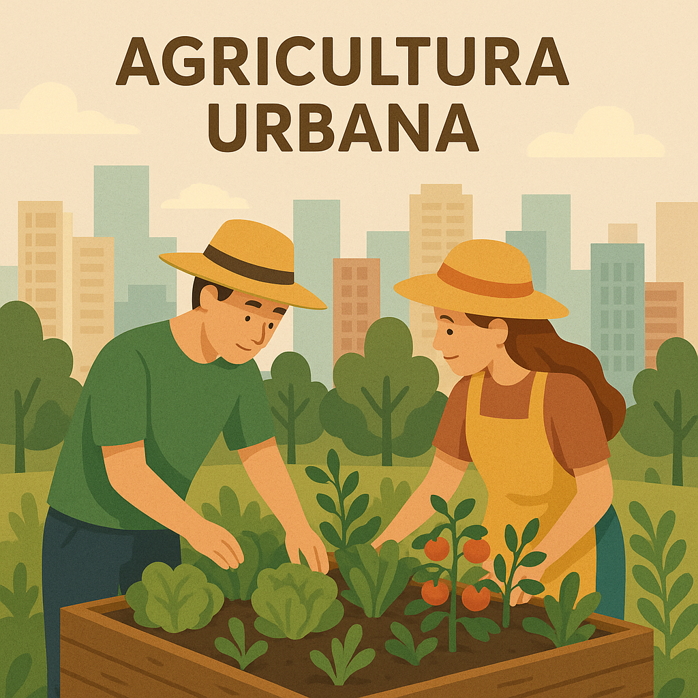

O Poder da Agricultura Urbana
A agricultura urbana está revolucionando a forma como as cidades se relacionam com a produção de alimentos. Segundo a FAO, até 2030, 60% da população urbana poderá participar de algum tipo de cultivo urbano.
Benefícios Principais
- Redução da pegada de carbono dos alimentos
- Fortalecimento da segurança alimentar
- Criação de comunidades mais unidas
- Melhoria da qualidade do ar nas cidades

Técnicas de Agricultura Urbana
Hortas Comunitárias
Espaços coletivos onde moradores cultivam alimentos e compartilham conhecimentos.
Telhados Verdes
Utilização de coberturas de edifícios para cultivo de plantas e alimentos.
Agricultura Vertical
Sistemas de cultivo em camadas verticais, otimizando espaços pequenos.
Impacto nas Comunidades
Estudos mostram que bairros com hortas comunitárias têm 30% mais interação social e os moradores consomem 40% mais vegetais frescos.